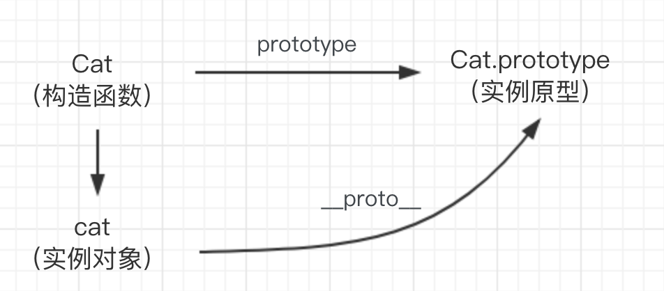
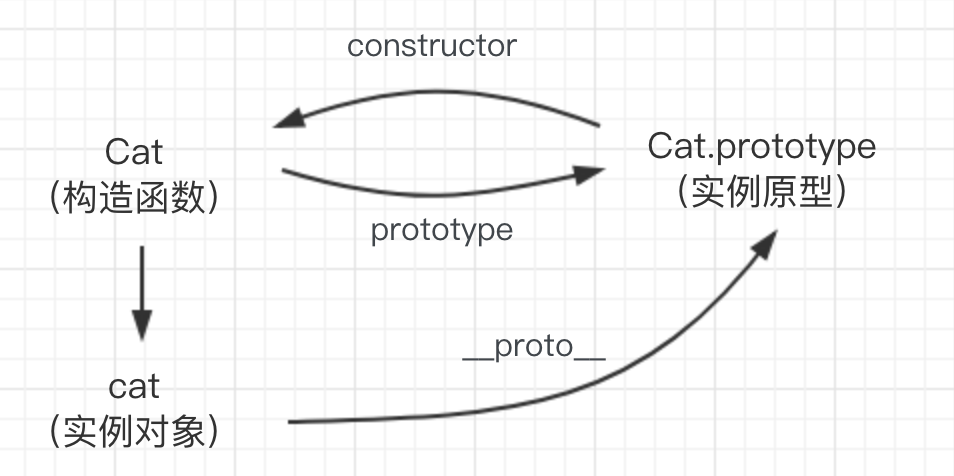
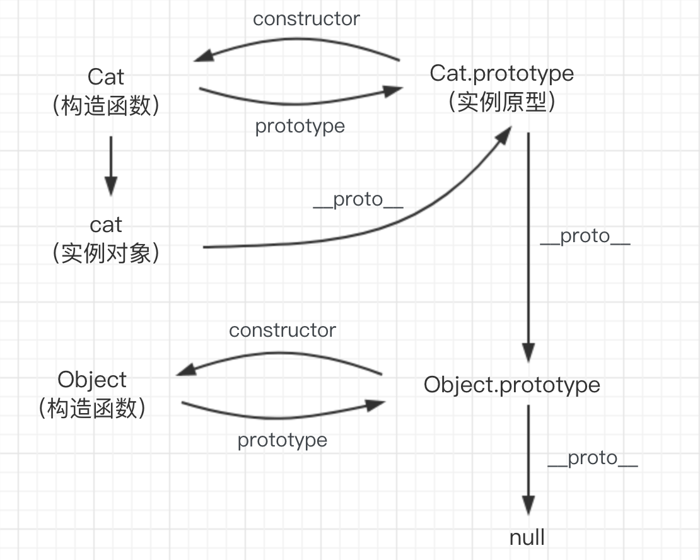
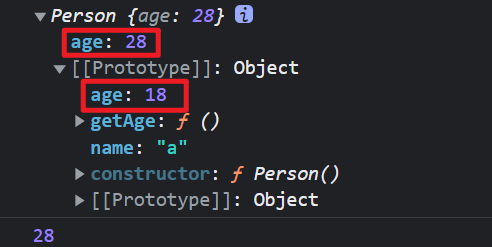
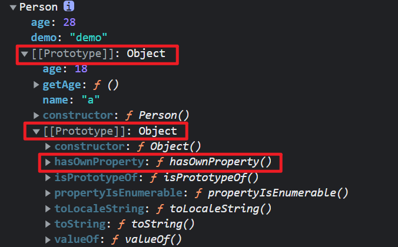

<!DOCTYPE html>


<html lang="zh-CN">
  

    <head>
      <meta charset="utf-8" />
        
      <meta name="description" content="小姚同学的学习笔记" />
      
      <meta
        name="viewport"
        content="width=device-width, initial-scale=1, maximum-scale=1"
      />
      <title>JS-面试总结1(ES6) |  小姚同学今天学习了吗</title>
  <meta name="generator" content="hexo-theme-ayer">
      
      <link rel="shortcut icon" href="/favicon.ico" />
       
<link rel="stylesheet" href="/dist/main.css">

      
<link rel="stylesheet" href="/css/fonts/remixicon.css">

      
<link rel="stylesheet" href="/css/custom.css">
 
      <script src="https://cdn.staticfile.org/pace/1.2.4/pace.min.js"></script>
       
 

      <link
        rel="stylesheet"
        href="https://cdn.jsdelivr.net/npm/@sweetalert2/theme-bulma@5.0.1/bulma.min.css"
      />
      <script src="https://cdn.jsdelivr.net/npm/sweetalert2@11.0.19/dist/sweetalert2.min.js"></script>

      <!-- mermaid -->
      
      <style>
        .swal2-styled.swal2-confirm {
          font-size: 1.6rem;
        }
      </style>
    <link rel="alternate" href="/atom.xml" title="小姚同学今天学习了吗" type="application/atom+xml">
</head>
  </html>
</html>


<body>
  <div id="app">
    
      
    <main class="content on">
      <section class="outer">
  <article
  id="post-JS-面试总结1"
  class="article article-type-post"
  itemscope
  itemprop="blogPost"
  data-scroll-reveal
>
  <div class="article-inner">
    
    <header class="article-header">
       
<h1 class="article-title sea-center" style="border-left:0" itemprop="name">
  JS-面试总结1(ES6)
</h1>
 

      
    </header>
     
    <div class="article-meta">
      <a href="/2022/04/12/JS-%E9%9D%A2%E8%AF%95%E6%80%BB%E7%BB%931/" class="article-date">
  <time datetime="2022-04-12T14:40:29.000Z" itemprop="datePublished">2022-04-12</time>
</a> 
  <div class="article-category">
    <a class="article-category-link" href="/categories/JavaScript/">JavaScript</a>
  </div>
  
<div class="word_count">
    <span class="post-time">
        <span class="post-meta-item-icon">
            <i class="ri-quill-pen-line"></i>
            <span class="post-meta-item-text"> 字数统计:</span>
            <span class="post-count">3.5k</span>
        </span>
    </span>

    <span class="post-time">
        &nbsp; | &nbsp;
        <span class="post-meta-item-icon">
            <i class="ri-book-open-line"></i>
            <span class="post-meta-item-text"> 阅读时长≈</span>
            <span class="post-count">14 分钟</span>
        </span>
    </span>
</div>
 
    </div>
      
    <div class="tocbot"></div>


  
    <div class="article-entry" itemprop="articleBody">
       
  <h2 id="1-原型与原型链"><a href="#1-原型与原型链" class="headerlink" title="1 原型与原型链"></a>1 原型与原型链</h2><h3 id="1-1-原型-prototype"><a href="#1-1-原型-prototype" class="headerlink" title="1.1 原型 prototype"></a>1.1 原型 prototype</h3><blockquote>
<p>原型：prototype </p>
</blockquote>
<ul>
<li>所有的<code>引用类型</code>都有一个<code>__proto__</code>(隐式原型)属性， 属性值是一个<code>普通的对象</code>；</li>
<li>所有的<code>函数</code>都有一个<code>prototype属性</code>， 属性值是一个普通的<code>对象</code>；</li>
<li>所有<code>引用类型的__proto__属性</code>都<code>指向</code>它<code>构造函数的prototype</code>。</li>
</ul>


<p>注意：</p>
<ul>
<li><strong>常规的对象和数组没有原型，原型是函数特有的。</strong></li>
</ul>
<blockquote>
<p>constructor</p>
</blockquote>
<ul>
<li>每个原型对象都有一个 constructor 属性，指向相关联的构造函数，所以构造函数和构造函数的 prototype 是可以相互指向的。 </li>
</ul>
<h3 id="1-2-原型链-proto"><a href="#1-2-原型链-proto" class="headerlink" title="1.2 原型链 proto"></a>1.2 原型链 <em>proto</em></h3><blockquote>
<p>当访问一个对象的某个属性时，首先会在这个对象本身的属性上查找，如果没有找到，则会去它的<code>__proto__</code>(隐式原型)上查找，如果还没有找到就会在它的构造函数的<code>prototype</code>的<code>__proto__</code>中查找，这样一层一层向上查找就会形成一个链式结构，称为<code>原型链</code>。<br>谷歌浏览器改版后展示方式：<code>[[prototype]]</code>。<br>所有对象都有原型链。<br> </p>
</blockquote>
<h3 id="1-3-原型、原型链和继承"><a href="#1-3-原型、原型链和继承" class="headerlink" title="1.3 原型、原型链和继承"></a>1.3 原型、原型链和继承</h3><blockquote>
<p>原型的属性和方法可以被继承</p>
</blockquote>
 <figure class="highlight js"><table><tr><td class="gutter"><pre><span class="line">1</span><br><span class="line">2</span><br><span class="line">3</span><br><span class="line">4</span><br><span class="line">5</span><br><span class="line">6</span><br><span class="line">7</span><br><span class="line">8</span><br><span class="line">9</span><br><span class="line">10</span><br><span class="line">11</span><br><span class="line">12</span><br></pre></td><td class="code"><pre><span class="line"> <span class="keyword">function</span> <span class="title function_">Person</span>(<span class="params"></span>)&#123;</span><br><span class="line"></span><br><span class="line">&#125;</span><br><span class="line"><span class="title class_">Person</span>.<span class="property"><span class="keyword">prototype</span></span>.<span class="property">name</span> = <span class="string">&quot;a&quot;</span>;</span><br><span class="line"><span class="title class_">Person</span>.<span class="property"><span class="keyword">prototype</span></span>.<span class="property">age</span> = <span class="number">18</span>;</span><br><span class="line"><span class="title class_">Person</span>.<span class="property"><span class="keyword">prototype</span></span>.<span class="property">getAge</span> = <span class="keyword">function</span>(<span class="params"></span>)&#123;</span><br><span class="line">    <span class="variable language_">console</span>.<span class="title function_">log</span>(<span class="variable language_">this</span>.<span class="property">age</span>);</span><br><span class="line">&#125;</span><br><span class="line"><span class="comment">// 实例</span></span><br><span class="line"><span class="keyword">let</span> person1 = <span class="keyword">new</span> <span class="title class_">Person</span>();</span><br><span class="line"><span class="variable language_">console</span>.<span class="title function_">log</span>(person1.<span class="property">name</span>);</span><br><span class="line">person1.<span class="title function_">getAge</span>();</span><br></pre></td></tr></table></figure>

<blockquote>
<p>原型链的查找规则</p>
</blockquote>
<ul>
<li>从当前实例属性去查找，如果找到就返回，否者顺着原型链一层一层查找，直到找到null为止，若到null都没有找到，则报错。</li>
</ul>
<figure class="highlight js"><table><tr><td class="gutter"><pre><span class="line">1</span><br><span class="line">2</span><br><span class="line">3</span><br><span class="line">4</span><br><span class="line">5</span><br></pre></td><td class="code"><pre><span class="line"><span class="comment">// 实例</span></span><br><span class="line"><span class="keyword">let</span> person1 = <span class="keyword">new</span> <span class="title class_">Person</span>();</span><br><span class="line">person1.<span class="property">age</span> = <span class="number">28</span></span><br><span class="line"><span class="variable language_">console</span>.<span class="title function_">log</span>(person1);</span><br><span class="line">person1.<span class="title function_">getAge</span>();</span><br></pre></td></tr></table></figure>
<p></p>
<blockquote>
<p>查找自身的私有属性</p>
</blockquote>
<figure class="highlight js"><table><tr><td class="gutter"><pre><span class="line">1</span><br><span class="line">2</span><br><span class="line">3</span><br><span class="line">4</span><br><span class="line">5</span><br><span class="line">6</span><br><span class="line">7</span><br><span class="line">8</span><br><span class="line">9</span><br><span class="line">10</span><br><span class="line">11</span><br><span class="line">12</span><br></pre></td><td class="code"><pre><span class="line"><span class="keyword">let</span> person1 = <span class="keyword">new</span> <span class="title class_">Person</span>();</span><br><span class="line">person1.<span class="property">age</span> = <span class="number">28</span></span><br><span class="line">person1.<span class="property">demo</span> = <span class="string">&quot;demo&quot;</span></span><br><span class="line"><span class="variable language_">console</span>.<span class="title function_">log</span>(person1); </span><br><span class="line"></span><br><span class="line"><span class="comment">// 使用hasOwnProperty方法查找自身属性</span></span><br><span class="line"><span class="keyword">let</span> item;</span><br><span class="line"><span class="keyword">for</span>(item <span class="keyword">in</span> person1)&#123;</span><br><span class="line">    <span class="keyword">if</span>(person1.<span class="title function_">hasOwnProperty</span>(item))&#123;</span><br><span class="line">        <span class="variable language_">console</span>.<span class="title function_">log</span>(item);</span><br><span class="line">    &#125;</span><br><span class="line">&#125;</span><br></pre></td></tr></table></figure>
 

<p><a target="_blank" rel="noopener" href="https://www.cnblogs.com/Joe-and-Joan/p/10692844.html">原型与原型链</a></p>
<h2 id="2-JS中的this"><a href="#2-JS中的this" class="headerlink" title="2 JS中的this"></a>2 JS中的this</h2><blockquote>
<p>使用情况1 ： 在函数中直接使用</p>
</blockquote>
<figure class="highlight js"><table><tr><td class="gutter"><pre><span class="line">1</span><br><span class="line">2</span><br><span class="line">3</span><br><span class="line">4</span><br><span class="line">5</span><br><span class="line">6</span><br></pre></td><td class="code"><pre><span class="line"><span class="keyword">function</span> <span class="title function_">get</span>(<span class="params">con</span>)&#123;</span><br><span class="line">    <span class="variable language_">console</span>.<span class="title function_">log</span>(con);</span><br><span class="line">&#125;</span><br><span class="line"><span class="comment">// 函数直接使用，get写法就等于get.call ，指向window</span></span><br><span class="line"><span class="title function_">get</span>(<span class="string">&#x27;hhh&#x27;</span>); </span><br><span class="line">get.<span class="title function_">call</span>(<span class="variable language_">window</span>, <span class="string">&#x27;hhh&#x27;</span>);</span><br></pre></td></tr></table></figure>


<blockquote>
<p>使用情况2 ： 函数作为对象的方法被调用（谁调用，指向谁）</p>
</blockquote>
<figure class="highlight js"><table><tr><td class="gutter"><pre><span class="line">1</span><br><span class="line">2</span><br><span class="line">3</span><br><span class="line">4</span><br><span class="line">5</span><br><span class="line">6</span><br><span class="line">7</span><br><span class="line">8</span><br><span class="line">9</span><br></pre></td><td class="code"><pre><span class="line"><span class="keyword">var</span> person = &#123;</span><br><span class="line">    <span class="attr">name</span>:<span class="string">&#x27;zhangsna&#x27;</span>,</span><br><span class="line">    <span class="attr">run</span>: <span class="keyword">function</span>(<span class="params">time</span>)&#123;</span><br><span class="line">        <span class="variable language_">console</span>.<span class="title function_">log</span>(<span class="string">`<span class="subst">$&#123;<span class="variable language_">this</span>.name&#125;</span>在跑步，最多跑<span class="subst">$&#123;time&#125;</span>min`</span>)</span><br><span class="line">    &#125;</span><br><span class="line">&#125;</span><br><span class="line"><span class="comment">// 函数方法被调用，谁调用就指向谁</span></span><br><span class="line">person.<span class="title function_">run</span>(<span class="number">30</span>);</span><br><span class="line">person.<span class="property">run</span>.<span class="title function_">call</span>(person, <span class="number">30</span>);</span><br></pre></td></tr></table></figure>

<p>eg：</p>
<figure class="highlight js"><table><tr><td class="gutter"><pre><span class="line">1</span><br><span class="line">2</span><br><span class="line">3</span><br><span class="line">4</span><br><span class="line">5</span><br><span class="line">6</span><br><span class="line">7</span><br><span class="line">8</span><br><span class="line">9</span><br><span class="line">10</span><br><span class="line">11</span><br><span class="line">12</span><br><span class="line">13</span><br><span class="line">14</span><br><span class="line">15</span><br><span class="line">16</span><br><span class="line">17</span><br><span class="line">18</span><br><span class="line">19</span><br></pre></td><td class="code"><pre><span class="line"><span class="keyword">var</span> fun = a.<span class="property">say</span>;</span><br><span class="line"><span class="comment">// var fun = function () &#123;</span></span><br><span class="line"><span class="comment">//     console.log(this.name);</span></span><br><span class="line"><span class="comment">// &#125;;</span></span><br><span class="line"><span class="title function_">fun</span>()   <span class="comment">// 函数直接调用 fun.call(window)  222</span></span><br><span class="line">a.<span class="title function_">say</span>() <span class="comment">// a.say.call(a)  111</span></span><br><span class="line"></span><br><span class="line"><span class="keyword">var</span> b = &#123;</span><br><span class="line">    <span class="attr">name</span>: <span class="number">333</span>,</span><br><span class="line">    <span class="attr">say</span>: <span class="keyword">function</span> (<span class="params">fun</span>) &#123;</span><br><span class="line">        <span class="title function_">fun</span>() <span class="comment">// fun.call(window,a.say)  则this指向a  222</span></span><br><span class="line">    &#125;</span><br><span class="line">&#125;</span><br><span class="line">b.<span class="title function_">say</span>(a.<span class="property">say</span>); <span class="comment">// 函数方法被调用</span></span><br><span class="line">b.<span class="property">say</span> = a.<span class="property">say</span>;</span><br><span class="line"><span class="comment">// b.say = function () &#123;</span></span><br><span class="line"><span class="comment">//     console.log(this.name);</span></span><br><span class="line"><span class="comment">// &#125;;</span></span><br><span class="line">b.<span class="title function_">say</span>();   <span class="comment">// b.say.call(b) 333</span></span><br></pre></td></tr></table></figure>

<blockquote>
<p>普通函数的this指向问题：</p>
</blockquote>
<ul>
<li>谁调用这个方法/谁触发事件，this就指向谁<ul>
<li>事件处理函数 this =&gt; 指向绑定事件的那个dom元素</li>
<li>定时器中 this =&gt; 指向window</li>
<li>自定义函数 this =&gt; 指向window</li>
<li>自定义对象 this =&gt; 指向对象</li>
<li>在类中的 this   =&gt; 指向new出来的实例化对象</li>
</ul>
</li>
</ul>
<blockquote>
<p>箭头函数的 this 指向：</p>
</blockquote>
<ul>
<li>解释一：this指向的是定义时所在的对象，而不是使用时所在的对象。</li>
<li>解释二：箭头函数没有this，它的父作用域中的this是谁，箭头函数的this就是谁，否则就是window。</li>
<li>因为箭头函数没有this，所以它不能用作构造函数。<figure class="highlight js"><table><tr><td class="gutter"><pre><span class="line">1</span><br><span class="line">2</span><br><span class="line">3</span><br><span class="line">4</span><br><span class="line">5</span><br><span class="line">6</span><br><span class="line">7</span><br><span class="line">8</span><br><span class="line">9</span><br><span class="line">10</span><br><span class="line">11</span><br><span class="line">12</span><br><span class="line">13</span><br><span class="line">14</span><br><span class="line">15</span><br><span class="line">16</span><br><span class="line">17</span><br><span class="line">18</span><br><span class="line">19</span><br><span class="line">20</span><br></pre></td><td class="code"><pre><span class="line"><span class="comment">// -----4----- 箭头函数</span></span><br><span class="line"><span class="keyword">var</span> x = <span class="number">11</span>;</span><br><span class="line"><span class="keyword">var</span> obj = &#123;</span><br><span class="line">    <span class="attr">x</span>:<span class="number">22</span>,</span><br><span class="line">    <span class="attr">say</span>: <span class="function">()=&gt;</span>&#123;</span><br><span class="line">        <span class="variable language_">console</span>.<span class="title function_">log</span>(<span class="variable language_">this</span>.<span class="property">x</span>); <span class="comment">// 11</span></span><br><span class="line">    &#125;</span><br><span class="line">&#125;</span><br><span class="line">obj.<span class="title function_">say</span>();</span><br><span class="line"></span><br><span class="line"><span class="comment">// -----5----- 箭头函数</span></span><br><span class="line"><span class="keyword">var</span> obj = &#123;</span><br><span class="line">    <span class="attr">birth</span>: <span class="number">1990</span>,</span><br><span class="line">    <span class="attr">getAge</span>: <span class="keyword">function</span>(<span class="params"></span>)&#123;</span><br><span class="line">        <span class="keyword">var</span> b = <span class="variable language_">this</span>.<span class="property">birth</span>;<span class="comment">// 1990</span></span><br><span class="line">        <span class="keyword">var</span> <span class="title function_">fn</span> = (<span class="params"></span>)=&gt; <span class="keyword">new</span> <span class="title class_">Date</span>().<span class="title function_">getFullYear</span>() - <span class="variable language_">this</span>.<span class="property">birth</span>;<span class="comment">//2022-1990</span></span><br><span class="line">        <span class="keyword">return</span> <span class="title function_">fn</span>();</span><br><span class="line">    &#125;</span><br><span class="line">&#125;</span><br><span class="line">obj.<span class="title function_">getAge</span>(); <span class="comment">//32</span></span><br></pre></td></tr></table></figure></li>
</ul>
<h2 id="3-var、let、const三者的特点"><a href="#3-var、let、const三者的特点" class="headerlink" title="3 var、let、const三者的特点"></a>3 var、let、const三者的特点</h2><h3 id="3-1-var"><a href="#3-1-var" class="headerlink" title="3.1 var"></a>3.1 var</h3><ul>
<li>声明提升（变量提升）</li>
<li>允许重复声明变量（变量覆盖）</li>
<li>函数作用域 （没有块级作用域）</li>
</ul>
<h3 id="3-2-let"><a href="#3-2-let" class="headerlink" title="3.2 let"></a>3.2 let</h3><ul>
<li>不允许重复声明；</li>
<li>不存在变量提升。暂时性死区：在一个作用域内，不允许同名变量进入；</li>
<li>块级作用域（es6中，一个{}就是一个块级作用域）</li>
</ul>
<h3 id="3-3-const"><a href="#3-3-const" class="headerlink" title="3.3 const"></a>3.3 const</h3><ul>
<li>const定义的变量不能修改，赋值后不允许再次更改；</li>
<li>不允许重复声明；</li>
<li>不存在变量提升；</li>
<li>const声明后必须赋值，否则报错；</li>
<li>支持块级作用域；</li>
<li>可以更改对象的属性的值（引用数据类型不能改地址）</li>
</ul>
<h2 id="4-Promise"><a href="#4-Promise" class="headerlink" title="4 Promise"></a>4 Promise</h2><figure class="highlight js"><table><tr><td class="gutter"><pre><span class="line">1</span><br><span class="line">2</span><br><span class="line">3</span><br><span class="line">4</span><br><span class="line">5</span><br><span class="line">6</span><br><span class="line">7</span><br><span class="line">8</span><br><span class="line">9</span><br><span class="line">10</span><br></pre></td><td class="code"><pre><span class="line"><span class="comment">// 1 2 4 3 </span></span><br><span class="line"><span class="keyword">const</span> promise = <span class="keyword">new</span> <span class="title class_">Promise</span>(<span class="function">(<span class="params">resolve, reject</span>)=&gt;</span>&#123;</span><br><span class="line">    <span class="variable language_">console</span>.<span class="title function_">log</span>(<span class="number">1</span>);</span><br><span class="line">    <span class="title function_">resolve</span>();</span><br><span class="line">    <span class="variable language_">console</span>.<span class="title function_">log</span>(<span class="number">2</span>);</span><br><span class="line">&#125;)</span><br><span class="line">promise.<span class="title function_">then</span>(<span class="function">()=&gt;</span>&#123;</span><br><span class="line">    <span class="variable language_">console</span>.<span class="title function_">log</span>(<span class="number">3</span>);</span><br><span class="line">&#125;)</span><br><span class="line"><span class="variable language_">console</span>.<span class="title function_">log</span>(<span class="number">4</span>);</span><br></pre></td></tr></table></figure>
<ul>
<li>Promise的构造函数是同步执行</li>
<li>.then()是异步执行的</li>
</ul>
<h2 id="5-JS作用域"><a href="#5-JS作用域" class="headerlink" title="5 JS作用域"></a>5 JS作用域</h2><h3 id="5-1-作用域常见类型"><a href="#5-1-作用域常见类型" class="headerlink" title="5.1 作用域常见类型"></a>5.1 作用域常见类型</h3><blockquote>
<p>全局作用域</p>
</blockquote>
<ul>
<li>全局作用域在一面打开时被创建，页面关闭时被销毁。</li>
<li>写在script标签中的变量和函数，作用域为全局，在页面的任意位置都可以访问到。</li>
<li>在全局作用域中有全局对象window，由浏览器创建，可以直接调用。</li>
<li>全局作用域中声明的变量和函数会作为window对象的属性和方法保存。<blockquote>
<p>函数作用域</p>
</blockquote>
</li>
<li>调用函数时被创建，执行完毕被销毁。</li>
<li>每调用一次函数就会创建一个新的函数作用域，他们之间相互独立。</li>
<li>函数作用域可以访问到全局作用域的变量，在函数外无法访问到函数作用域内的变量。</li>
<li>在函数作用域中访问变量、函数时，会现在自身作用域中寻找，若没找到，则会到上一级寻找， 一直到全局作用域。</li>
</ul>
<p>注意：JS可以模拟块级作用域。</p>
<h3 id="5-2-作用域的深层次理解"><a href="#5-2-作用域的深层次理解" class="headerlink" title="5.2 作用域的深层次理解"></a>5.2 作用域的深层次理解</h3><ul>
<li><p>执行期的上下文</p>
<ul>
<li>当函数代码执行的前期会创建一个执行期上下文的内部对象(<code>AO</code>)(局部作用域)；</li>
<li>这个内部对象是在预编译的时候创建出来的，因为当函数被调用的时候，会先进行预编译；</li>
<li>在全局代码执行的前期会创建一个执行期的上下文的对象<code>GO</code>(全局作用域)。</li>
</ul>
</li>
<li><p>作用域链</p>
<ul>
<li>作用域链会被保存到一个隐式的属性中[[scope]]。这个属性是用户无法访问的，但是JS引擎将会访问它，这里面存储的是作用域链。</li>
<li><code>AO</code>和<code>GO</code>的集合</li>
</ul>
</li>
</ul>
<h3 id="5-3-预编译"><a href="#5-3-预编译" class="headerlink" title="5.3 预编译"></a>5.3 预编译</h3><blockquote>
<p>函数作用域-预编译</p>
</blockquote>
<ul>
<li>预编译发生在代码执行的前一刻。</li>
<li>预编译的作用<ul>
<li>函数声明整体提升；</li>
<li>变量声明提升；</li>
</ul>
</li>
<li>预编译步骤<ul>
<li>创建AO对象(Activation object)</li>
<li>找形参和变量声明，将变量声明的名作为AO属性的名，值为undefined；</li>
<li>将实参和形参相统一；</li>
<li>在函数体中找到函数声明，值赋予函数体。（注意函数声明要区别于函数表达式）(函数声明会覆盖变量声明)</li>
</ul>
</li>
</ul>
<blockquote>
<p>全局作用域 - 预编译</p>
</blockquote>
<ul>
<li>创建GO对象；</li>
<li>找变量声明，将变量名作为GO对象的属性名，值是undefined；</li>
<li>找函数声明，值赋予函数体。</li>
</ul>
<h2 id="6-闭包"><a href="#6-闭包" class="headerlink" title="6 闭包"></a>6 闭包</h2><blockquote>
<p>闭包： 可以在一个内层函数中访问到其外层函数的作用域。</p>
</blockquote>
<ul>
<li>简单来讲：闭包就是指有权访问另一个函数作用域中的变量的函数。（b带着a的ao出去了。）</li>
<li>理解：外部函数调用之后其变量对象本应该销毁，但是闭包的存在是我们仍然可以访问外部函数的变量对象。</li>
<li>闭包的特性：<ul>
<li>函数嵌套函数；</li>
<li>函数内部引用了函数外部的参数和变量；</li>
<li>参数和变量不会被垃圾回收机制收回。</li>
</ul>
</li>
<li>闭包的优点：<ul>
<li>保护函数内的变量安全，实现封装，防止变量流入其他环境发生命名冲突；</li>
<li>在内存中维持一个变量，可以做缓存；</li>
<li>匿名自执行函数可以减少内存消耗。</li>
</ul>
</li>
</ul>
<figure class="highlight js"><table><tr><td class="gutter"><pre><span class="line">1</span><br><span class="line">2</span><br><span class="line">3</span><br><span class="line">4</span><br><span class="line">5</span><br><span class="line">6</span><br><span class="line">7</span><br></pre></td><td class="code"><pre><span class="line"><span class="keyword">function</span> <span class="title function_">a</span>(<span class="params"></span>)&#123;</span><br><span class="line">    <span class="keyword">var</span> name =<span class="string">&quot;asd&quot;</span>;</span><br><span class="line">    <span class="keyword">return</span> <span class="keyword">function</span>(<span class="params"></span>)&#123;</span><br><span class="line">        <span class="keyword">return</span> name;</span><br><span class="line">    &#125;</span><br><span class="line">&#125;</span><br><span class="line"><span class="keyword">var</span> b = <span class="title function_">a</span>();</span><br></pre></td></tr></table></figure>
<ul>
<li>JS的防抖和节流使用了闭包。</li>
</ul>
<h2 id="7-JS的防抖和节流"><a href="#7-JS的防抖和节流" class="headerlink" title="7 JS的防抖和节流"></a>7 JS的防抖和节流</h2><h3 id="7-1-防抖函数-debounce"><a href="#7-1-防抖函数-debounce" class="headerlink" title="7.1 防抖函数 - debounce"></a>7.1 防抖函数 - debounce</h3><blockquote>
<p>防抖： 在一段时间内允许多次触发函数，但是只在最后一次有效执行。</p>
</blockquote>
<ul>
<li>理解<ul>
<li>当持续触发事件，在一定时间内没有再触发事件，事件处理函数才会执行一次。如果在设定的事件到来之前又一次触发了事件，就重新开始延时。</li>
<li>（栗子）：王者荣耀回城，如果多次点击回城按钮，则最后一次才有效。</li>
<li>（栗子）王者荣耀回城是防抖，放技能后进入冷却就是节流。</li>
</ul>
</li>
<li>实际应用<ul>
<li>使用echarts时，改变浏览器宽度的时候，希望重新渲染。echarts的图像，可以使用此函数，提升性能。</li>
<li>解决输入搜索时的bug：输入结束后n秒才进行搜索请求，n秒内又输入内容，则重新计时。</li>
</ul>
</li>
</ul>
<figure class="highlight html"><table><tr><td class="gutter"><pre><span class="line">1</span><br><span class="line">2</span><br><span class="line">3</span><br><span class="line">4</span><br><span class="line">5</span><br><span class="line">6</span><br><span class="line">7</span><br><span class="line">8</span><br><span class="line">9</span><br><span class="line">10</span><br><span class="line">11</span><br><span class="line">12</span><br><span class="line">13</span><br><span class="line">14</span><br><span class="line">15</span><br><span class="line">16</span><br><span class="line">17</span><br><span class="line">18</span><br><span class="line">19</span><br><span class="line">20</span><br><span class="line">21</span><br><span class="line">22</span><br><span class="line">23</span><br><span class="line">24</span><br><span class="line">25</span><br><span class="line">26</span><br><span class="line">27</span><br><span class="line">28</span><br><span class="line">29</span><br></pre></td><td class="code"><pre><span class="line"><span class="tag">&lt;<span class="name">input</span> <span class="attr">name</span>=<span class="string">&quot;&quot;</span> <span class="attr">type</span>=<span class="string">&quot;text&quot;</span> <span class="attr">id</span>=<span class="string">&quot;input&quot;</span>&gt;</span></span><br><span class="line"></span><br><span class="line"><span class="comment">&lt;!-- 要求 : 打印结果只出现一次,在键盘抬起后一秒产生 --&gt;</span></span><br><span class="line"><span class="tag">&lt;<span class="name">script</span>&gt;</span><span class="language-javascript"></span></span><br><span class="line"><span class="language-javascript">    <span class="comment">// 1. 获取输入框</span></span></span><br><span class="line"><span class="language-javascript">    <span class="keyword">var</span> input = <span class="variable language_">document</span>.<span class="title function_">getElementById</span>(<span class="string">&#x27;input&#x27;</span>);</span></span><br><span class="line"><span class="language-javascript">    <span class="comment">// 2. 防抖函数</span></span></span><br><span class="line"><span class="language-javascript">    <span class="keyword">function</span> <span class="title function_">debounce</span>(<span class="params">delay, callback</span>) &#123;</span></span><br><span class="line"><span class="language-javascript">        <span class="keyword">let</span> timer;</span></span><br><span class="line"><span class="language-javascript">        <span class="comment">// timer变量需要一直保存在内存中</span></span></span><br><span class="line"><span class="language-javascript">        <span class="comment">// 使用闭包（函数里面return出函数）</span></span></span><br><span class="line"><span class="language-javascript">        <span class="keyword">return</span> <span class="keyword">function</span> (<span class="params">value</span>) &#123;</span></span><br><span class="line"><span class="language-javascript">            <span class="built_in">clearTimeout</span>(timer);</span></span><br><span class="line"><span class="language-javascript">            timer = <span class="built_in">setTimeout</span>(<span class="keyword">function</span> (<span class="params"></span>) &#123;</span></span><br><span class="line"><span class="language-javascript">                <span class="title function_">callback</span>(value)</span></span><br><span class="line"><span class="language-javascript">            &#125;, delay)</span></span><br><span class="line"><span class="language-javascript">        &#125;</span></span><br><span class="line"><span class="language-javascript">    &#125;</span></span><br><span class="line"><span class="language-javascript">    <span class="comment">// 在外部输出value值</span></span></span><br><span class="line"><span class="language-javascript">    <span class="keyword">function</span> <span class="title function_">fn</span>(<span class="params">value</span>) &#123;</span></span><br><span class="line"><span class="language-javascript">        <span class="variable language_">console</span>.<span class="title function_">log</span>(value);</span></span><br><span class="line"><span class="language-javascript">    &#125;</span></span><br><span class="line"><span class="language-javascript">    <span class="comment">// 3. 将防抖函数的return值（函数）赋值给debounceFunc</span></span></span><br><span class="line"><span class="language-javascript">    <span class="keyword">var</span> debounceFunc = <span class="title function_">debounce</span>(<span class="number">1000</span>, fn);</span></span><br><span class="line"><span class="language-javascript">    <span class="comment">// 4. 函数触发</span></span></span><br><span class="line"><span class="language-javascript">    input.<span class="title function_">addEventListener</span>(<span class="string">&#x27;keyup&#x27;</span>, <span class="keyword">function</span> (<span class="params">e</span>) &#123;</span></span><br><span class="line"><span class="language-javascript">        <span class="title function_">debounceFunc</span>(e.<span class="property">target</span>.<span class="property">value</span>)</span></span><br><span class="line"><span class="language-javascript">    &#125;)</span></span><br><span class="line"><span class="language-javascript"></span><span class="tag">&lt;/<span class="name">script</span>&gt;</span></span><br></pre></td></tr></table></figure>

<h3 id="7-2-节流函数-throttling"><a href="#7-2-节流函数-throttling" class="headerlink" title="7.2 节流函数 - throttling"></a>7.2 节流函数 - throttling</h3><blockquote>
<p>节流： 在一段事件内，只做一件事情。</p>
</blockquote>
<ul>
<li><p>理解</p>
<ul>
<li>当持续触发事件的时候，保证一段时间内只调用一次事件处理函数。</li>
</ul>
</li>
<li><p>应用</p>
<ul>
<li>表单的提交：鼠标不断点击触发，规定在n秒内多次点击只有一次生效。</li>
</ul>
</li>
</ul>
<figure class="highlight html"><table><tr><td class="gutter"><pre><span class="line">1</span><br><span class="line">2</span><br><span class="line">3</span><br><span class="line">4</span><br><span class="line">5</span><br><span class="line">6</span><br><span class="line">7</span><br><span class="line">8</span><br><span class="line">9</span><br><span class="line">10</span><br><span class="line">11</span><br><span class="line">12</span><br><span class="line">13</span><br><span class="line">14</span><br><span class="line">15</span><br><span class="line">16</span><br><span class="line">17</span><br><span class="line">18</span><br><span class="line">19</span><br><span class="line">20</span><br><span class="line">21</span><br><span class="line">22</span><br></pre></td><td class="code"><pre><span class="line"><span class="tag">&lt;<span class="name">button</span> <span class="attr">id</span>=<span class="string">&quot;button&quot;</span>&gt;</span>点击<span class="tag">&lt;/<span class="name">button</span>&gt;</span></span><br><span class="line"></span><br><span class="line"><span class="tag">&lt;<span class="name">script</span>&gt;</span><span class="language-javascript"></span></span><br><span class="line"><span class="language-javascript">    <span class="comment">// 节流函数</span></span></span><br><span class="line"><span class="language-javascript">    <span class="keyword">function</span> <span class="title function_">thro</span>(<span class="params">func, wait</span>) &#123;</span></span><br><span class="line"><span class="language-javascript">        <span class="keyword">let</span> timerOut;</span></span><br><span class="line"><span class="language-javascript">        <span class="comment">// 使用闭包</span></span></span><br><span class="line"><span class="language-javascript">        <span class="keyword">return</span> <span class="keyword">function</span> (<span class="params"></span>) &#123;</span></span><br><span class="line"><span class="language-javascript">            <span class="comment">// 根据timerOut的值 判断程序是否进行</span></span></span><br><span class="line"><span class="language-javascript">            <span class="keyword">if</span> (!timerOut) &#123;</span></span><br><span class="line"><span class="language-javascript">                timerOut = <span class="built_in">setTimeout</span>(<span class="keyword">function</span> (<span class="params"></span>) &#123;</span></span><br><span class="line"><span class="language-javascript">                    <span class="title function_">func</span>();</span></span><br><span class="line"><span class="language-javascript">                    timerOut = <span class="literal">null</span>;<span class="comment">// 程序运行之后timerOut设置为空</span></span></span><br><span class="line"><span class="language-javascript">                &#125;, wait)</span></span><br><span class="line"><span class="language-javascript">            &#125;</span></span><br><span class="line"><span class="language-javascript">        &#125;</span></span><br><span class="line"><span class="language-javascript">    &#125;</span></span><br><span class="line"><span class="language-javascript">    <span class="keyword">function</span> <span class="title function_">handle</span>(<span class="params"></span>) &#123;</span></span><br><span class="line"><span class="language-javascript">        <span class="variable language_">console</span>.<span class="title function_">log</span>(<span class="title class_">Math</span>.<span class="title function_">random</span>());</span></span><br><span class="line"><span class="language-javascript">    &#125;</span></span><br><span class="line"><span class="language-javascript">    <span class="variable language_">document</span>.<span class="title function_">getElementById</span>(<span class="string">&#x27;button&#x27;</span>).<span class="property">onclick</span> = <span class="title function_">thro</span>(handle,<span class="number">2000</span>);</span></span><br><span class="line"><span class="language-javascript"></span><span class="tag">&lt;/<span class="name">script</span>&gt;</span></span><br></pre></td></tr></table></figure>

<h4 id="应用场景"><a href="#应用场景" class="headerlink" title="应用场景"></a>应用场景</h4><ul>
<li>防抖和节流都是用来防止高频率的JS代码的执行。</li>
</ul>
<h2 id="8-call、apply和bind"><a href="#8-call、apply和bind" class="headerlink" title="8 call、apply和bind"></a>8 call、apply和bind</h2><h3 id="8-1-基础"><a href="#8-1-基础" class="headerlink" title="8.1 基础"></a>8.1 基础</h3><ol>
<li><p>简介</p>
<ul>
<li><code>call</code>和<code>apply</code>都属于<code>Function.prototype</code>的一个方法，它是JS引擎内在实现的，因为属于<code>Function.prototype</code>，所以每个<code>function对象实例</code>都有<code>call</code>和<code>apply</code>属性。</li>
<li>目标函数调用call和apply后，会直接被执行。</li>
<li>目标函数调用bind后，不会立即执行，而是返回一个新的函数，调用新函数才会执行目标函数。</li>
</ul>
</li>
<li><p>作用 ：改变this的指向。 </p>
<figure class="highlight js"><table><tr><td class="gutter"><pre><span class="line">1</span><br><span class="line">2</span><br><span class="line">3</span><br><span class="line">4</span><br><span class="line">5</span><br><span class="line">6</span><br><span class="line">7</span><br><span class="line">8</span><br><span class="line">9</span><br><span class="line">10</span><br><span class="line">11</span><br><span class="line">12</span><br><span class="line">13</span><br><span class="line">14</span><br><span class="line">15</span><br><span class="line">16</span><br><span class="line">17</span><br></pre></td><td class="code"><pre><span class="line"><span class="comment">/*</span></span><br><span class="line"><span class="comment">    改变 this 的指向方式：</span></span><br><span class="line"><span class="comment">        1. call (this,arg1,arg2,arg3)</span></span><br><span class="line"><span class="comment">        2. apply (this,[arg1,arg2,arg3])</span></span><br><span class="line"><span class="comment">        3. bind (this,arg1,arg2,arg3) 手动调用</span></span><br><span class="line"><span class="comment">*/</span></span><br><span class="line"><span class="keyword">const</span> oBtn1 = <span class="variable language_">document</span>.<span class="title function_">getElementById</span>(<span class="string">&#x27;btn1&#x27;</span>);</span><br><span class="line"><span class="keyword">const</span> fn5 = <span class="keyword">function</span> (<span class="params">str</span>) &#123;</span><br><span class="line">    <span class="variable language_">console</span>.<span class="title function_">log</span>(<span class="variable language_">this</span>, str);</span><br><span class="line">&#125;</span><br><span class="line">fn5.<span class="title function_">call</span>(oBtn1, <span class="string">&#x27;aa&#x27;</span>);</span><br><span class="line">fn5.<span class="title function_">apply</span>(oBtn1, [<span class="string">&#x27;aa&#x27;</span>]);</span><br><span class="line">fn5.<span class="title function_">bind</span>(oBtn1, <span class="string">&#x27;aa&#x27;</span>)();</span><br><span class="line"></span><br><span class="line"><span class="variable language_">console</span>.<span class="title function_">log</span>(person.<span class="property">getName</span>.<span class="title function_">call</span>(obj2,  <span class="number">1</span>, <span class="number">2</span>, <span class="number">3</span>, <span class="number">4</span> ));<span class="comment">// aaa</span></span><br><span class="line"><span class="variable language_">console</span>.<span class="title function_">log</span>(person.<span class="property">getName</span>.<span class="title function_">apply</span>(obj2, [<span class="number">1</span>, <span class="number">2</span>, <span class="number">3</span>, <span class="number">4</span>]));<span class="comment">// aaa</span></span><br><span class="line"><span class="variable language_">console</span>.<span class="title function_">log</span>(person.<span class="property">getName</span>.<span class="title function_">bind</span>(obj2,<span class="number">1</span>, <span class="number">2</span>, <span class="number">3</span>, <span class="number">4</span> )());<span class="comment">// aaa</span></span><br></pre></td></tr></table></figure></li>
<li><p>区别 ：在于接收参数的方式不同</p>
<ul>
<li><code>call()</code> : 第一个参数是this值，其余参数都直接传递给函数。 传递给函数的<strong>参数必须逐个列举</strong>。</li>
<li><code>apply()</code> : 传递给函数的是<strong>参数数组</strong>。</li>
<li><code>bind()</code> ： 手动调用，返回的是函数。在使用时要加<code>()</code>。</li>
</ul>
</li>
<li><p>应用场景</p>
<ul>
<li>实现JS的继承，构造函数继承可以使用call实现；</li>
<li>判断JS的数据类型；<figure class="highlight js"><table><tr><td class="gutter"><pre><span class="line">1</span><br><span class="line">2</span><br><span class="line">3</span><br></pre></td><td class="code"><pre><span class="line"><span class="comment">// 使用call判断js的数据类型</span></span><br><span class="line"><span class="variable language_">console</span>.<span class="title function_">log</span>(<span class="title class_">Object</span>.<span class="property"><span class="keyword">prototype</span></span>.<span class="property">toString</span>.<span class="title function_">call</span>(&#123;&#125;)=== <span class="string">&#x27;[object Object]&#x27;</span>);</span><br><span class="line"><span class="variable language_">console</span>.<span class="title function_">log</span>(<span class="title class_">Object</span>.<span class="property"><span class="keyword">prototype</span></span>.<span class="property">toString</span>.<span class="title function_">call</span>([])=== <span class="string">&#x27;[object Array]&#x27;</span>);</span><br></pre></td></tr></table></figure></li>
<li>把伪数组转换为数组。</li>
</ul>
 <figure class="highlight js"><table><tr><td class="gutter"><pre><span class="line">1</span><br><span class="line">2</span><br><span class="line">3</span><br><span class="line">4</span><br><span class="line">5</span><br><span class="line">6</span><br><span class="line">7</span><br><span class="line">8</span><br></pre></td><td class="code"><pre><span class="line"><span class="comment">// 使用call把伪数组转换成数组</span></span><br><span class="line"><span class="keyword">function</span> <span class="title function_">get</span>(<span class="params"></span>)&#123;</span><br><span class="line">    <span class="variable language_">console</span>.<span class="title function_">log</span>(<span class="variable language_">arguments</span>);<span class="comment">// Arguments(3) [1, 2, 3, callee: ƒ, Symbol(Symbol.iterator): ƒ]</span></span><br><span class="line"></span><br><span class="line">    <span class="variable language_">console</span>.<span class="title function_">log</span>([...<span class="variable language_">arguments</span>]);<span class="comment">// es6  (3) [1, 2, 3]</span></span><br><span class="line">    <span class="variable language_">console</span>.<span class="title function_">log</span>(<span class="title class_">Array</span>.<span class="property"><span class="keyword">prototype</span></span>.<span class="property">slice</span>.<span class="title function_">call</span>(<span class="variable language_">arguments</span>));<span class="comment">//es5  (3) [1, 2, 3]</span></span><br><span class="line">&#125;</span><br><span class="line"><span class="title function_">get</span>(<span class="number">1</span>, <span class="number">2</span>, <span class="number">3</span>);</span><br></pre></td></tr></table></figure></li>
</ol>
<h3 id="8-2-call"><a href="#8-2-call" class="headerlink" title="8.2 call()"></a>8.2 call()</h3><ol>
<li><p>改变this指向</p>
 <figure class="highlight js"><table><tr><td class="gutter"><pre><span class="line">1</span><br><span class="line">2</span><br><span class="line">3</span><br><span class="line">4</span><br><span class="line">5</span><br><span class="line">6</span><br><span class="line">7</span><br><span class="line">8</span><br><span class="line">9</span><br><span class="line">10</span><br></pre></td><td class="code"><pre><span class="line"><span class="comment">// call实现改变this指向</span></span><br><span class="line">    <span class="keyword">var</span> person = &#123;</span><br><span class="line">        getName : <span class="keyword">function</span>(<span class="params"></span>)&#123;</span><br><span class="line">            <span class="keyword">return</span> <span class="variable language_">this</span>.<span class="property">name</span>;</span><br><span class="line">        &#125;</span><br><span class="line">    &#125;</span><br><span class="line">    <span class="keyword">var</span> person1 = &#123;</span><br><span class="line">        <span class="attr">name</span>: <span class="string">&#x27;ddd&#x27;</span></span><br><span class="line">    &#125;</span><br><span class="line">    <span class="variable language_">console</span>.<span class="title function_">log</span>(person.<span class="property">getName</span>.<span class="title function_">call</span>(person1))</span><br></pre></td></tr></table></figure>

<ul>
<li>手写<figure class="highlight js"><table><tr><td class="gutter"><pre><span class="line">1</span><br><span class="line">2</span><br><span class="line">3</span><br><span class="line">4</span><br><span class="line">5</span><br><span class="line">6</span><br><span class="line">7</span><br><span class="line">8</span><br><span class="line">9</span><br><span class="line">10</span><br><span class="line">11</span><br><span class="line">12</span><br><span class="line">13</span><br><span class="line">14</span><br><span class="line">15</span><br><span class="line">16</span><br><span class="line">17</span><br><span class="line">18</span><br><span class="line">19</span><br><span class="line">20</span><br></pre></td><td class="code"><pre><span class="line"><span class="comment">/*</span></span><br><span class="line"><span class="comment">    手写call</span></span><br><span class="line"><span class="comment">    1. 写在哪？ Function.prototype后</span></span><br><span class="line"><span class="comment">    2. 对this进行判断，this必须是一个function，如果不是function则抛出异常</span></span><br><span class="line"><span class="comment">    3. 给上下文赋值，设置为接收到的参数或者是window</span></span><br><span class="line"><span class="comment">    4. 考虑参数，拿到除了第一个参数之外的参数</span></span><br><span class="line"><span class="comment">    5. 改变this的指向</span></span><br><span class="line"><span class="comment">*/</span></span><br><span class="line"><span class="title class_">Function</span>.<span class="property"><span class="keyword">prototype</span></span>.<span class="property">mycall</span> = <span class="keyword">function</span> (<span class="params">context</span>) &#123;</span><br><span class="line">    <span class="keyword">if</span>( <span class="keyword">typeof</span> <span class="variable language_">this</span> !== <span class="string">&#x27;function&#x27;</span>)&#123;</span><br><span class="line">        <span class="keyword">throw</span> <span class="keyword">new</span> <span class="title class_">Error</span>;</span><br><span class="line">    &#125;   </span><br><span class="line">    context = context || <span class="variable language_">window</span>;<span class="comment">// 给context赋值</span></span><br><span class="line">    <span class="keyword">let</span> args = [...<span class="variable language_">arguments</span>].<span class="title function_">slice</span>(<span class="number">1</span>);<span class="comment">//获取除第一个参数之外的参数 </span></span><br><span class="line"></span><br><span class="line">    context.<span class="property">fn</span> = <span class="variable language_">this</span>;<span class="comment">// 改变this的指向</span></span><br><span class="line">    <span class="keyword">let</span> result = context.<span class="title function_">fn</span>(...args);<span class="comment">// 解构参数 </span></span><br><span class="line">    <span class="keyword">return</span> result;</span><br><span class="line">&#125;</span><br><span class="line"><span class="variable language_">console</span>.<span class="title function_">log</span>(person.<span class="property">getName</span>.<span class="title function_">mycall</span>(person1))</span><br></pre></td></tr></table></figure></li>
</ul>
</li>
</ol>
<h3 id="8-3-apply"><a href="#8-3-apply" class="headerlink" title="8.3 apply()"></a>8.3 apply()</h3><ul>
<li>手写apply()<figure class="highlight js"><table><tr><td class="gutter"><pre><span class="line">1</span><br><span class="line">2</span><br><span class="line">3</span><br><span class="line">4</span><br><span class="line">5</span><br><span class="line">6</span><br><span class="line">7</span><br><span class="line">8</span><br><span class="line">9</span><br><span class="line">10</span><br><span class="line">11</span><br><span class="line">12</span><br><span class="line">13</span><br><span class="line">14</span><br><span class="line">15</span><br><span class="line">16</span><br><span class="line">17</span><br><span class="line">18</span><br><span class="line">19</span><br><span class="line">20</span><br><span class="line">21</span><br><span class="line">22</span><br></pre></td><td class="code"><pre><span class="line"><span class="comment">/*</span></span><br><span class="line"><span class="comment">    手写apply</span></span><br><span class="line"><span class="comment">    与call的区别：将传入的第二个参数(数组)进行解构</span></span><br><span class="line"><span class="comment">*/</span>  </span><br><span class="line"><span class="title class_">Function</span>.<span class="property"><span class="keyword">prototype</span></span>.<span class="property">myApply</span> = <span class="keyword">function</span> (<span class="params">context</span>) &#123;</span><br><span class="line">    <span class="keyword">if</span>( <span class="keyword">typeof</span> <span class="variable language_">this</span> !== <span class="string">&#x27;function&#x27;</span>)&#123;</span><br><span class="line">        <span class="keyword">throw</span> <span class="keyword">new</span> <span class="title class_">Error</span>;</span><br><span class="line">    &#125;   </span><br><span class="line">    context = context || <span class="variable language_">window</span>;<span class="comment">// 给context赋值</span></span><br><span class="line">    context.<span class="property">fn</span> = <span class="variable language_">this</span>; <span class="comment">// 改变this的指向</span></span><br><span class="line">    <span class="keyword">let</span> result;</span><br><span class="line">    <span class="comment">// 判断是否有传入多的参数</span></span><br><span class="line">    <span class="keyword">if</span>(<span class="variable language_">arguments</span>[<span class="number">1</span>])&#123;</span><br><span class="line">        result = context.<span class="title function_">fn</span>(...<span class="variable language_">arguments</span>[<span class="number">1</span>]);<span class="comment">// 解构</span></span><br><span class="line">    &#125;<span class="keyword">else</span>&#123;</span><br><span class="line">        result = context.<span class="title function_">fn</span>();</span><br><span class="line">    &#125;</span><br><span class="line">    <span class="keyword">delete</span> context.<span class="property">fn</span>;</span><br><span class="line">    <span class="keyword">return</span> result;</span><br><span class="line">&#125;</span><br><span class="line"><span class="variable language_">console</span>.<span class="title function_">log</span>(person.<span class="property">getName</span>.<span class="title function_">myApply</span>(obj2,[<span class="number">1</span>,<span class="number">2</span>,<span class="number">3</span>,<span class="number">4</span>]));<span class="comment">// 手写</span></span><br><span class="line"><span class="variable language_">console</span>.<span class="title function_">log</span>(person.<span class="property">getName</span>.<span class="title function_">apply</span>(obj2,[<span class="number">1</span>,<span class="number">2</span>,<span class="number">3</span>,<span class="number">4</span>])); <span class="comment">// 调用</span></span><br></pre></td></tr></table></figure></li>
</ul>
<h3 id="8-4-bind"><a href="#8-4-bind" class="headerlink" title="8.4 bind()"></a>8.4 bind()</h3><ul>
<li>手写bind()<figure class="highlight js"><table><tr><td class="gutter"><pre><span class="line">1</span><br><span class="line">2</span><br><span class="line">3</span><br><span class="line">4</span><br><span class="line">5</span><br><span class="line">6</span><br><span class="line">7</span><br><span class="line">8</span><br><span class="line">9</span><br><span class="line">10</span><br><span class="line">11</span><br><span class="line">12</span><br><span class="line">13</span><br><span class="line">14</span><br><span class="line">15</span><br><span class="line">16</span><br><span class="line">17</span><br><span class="line">18</span><br><span class="line">19</span><br><span class="line">20</span><br><span class="line">21</span><br></pre></td><td class="code"><pre><span class="line"><span class="title class_">Function</span>.<span class="property"><span class="keyword">prototype</span></span>.<span class="property">bind1</span> = <span class="keyword">function</span> (<span class="params"></span>) &#123;</span><br><span class="line">    <span class="comment">// arguments 可以获取一个函数的所有参数，arguments 是一个伪数组</span></span><br><span class="line">    <span class="comment">// 使用 Array.from() 方法将 arguments 伪数组转化成数组</span></span><br><span class="line">    <span class="keyword">const</span> args = <span class="title class_">Array</span>.<span class="title function_">from</span>(<span class="variable language_">arguments</span>)</span><br><span class="line">    <span class="comment">// 获取 this 指向取出数组第一项，数组剩余的就是传递的参数</span></span><br><span class="line">    <span class="keyword">const</span> _this = args.<span class="title function_">shift</span>()</span><br><span class="line">    <span class="keyword">const</span> context = <span class="variable language_">this</span> <span class="comment">// 当前函数 fn1.bind(...) 中的 fn1</span></span><br><span class="line"></span><br><span class="line">    <span class="keyword">return</span> context.<span class="title function_">apply</span>(_this, args)</span><br><span class="line"></span><br><span class="line">&#125;</span><br><span class="line"></span><br><span class="line"><span class="keyword">function</span> <span class="title function_">fn1</span>(<span class="params">a, b, c</span>) &#123;</span><br><span class="line">    <span class="variable language_">console</span>.<span class="title function_">log</span>(<span class="string">&#x27;this&#x27;</span>, <span class="variable language_">this</span>)</span><br><span class="line">    <span class="variable language_">console</span>.<span class="title function_">log</span>(a, b, c)</span><br><span class="line">&#125;</span><br><span class="line"></span><br><span class="line"><span class="keyword">function</span> <span class="title function_">fn2</span>(<span class="params"></span>) &#123;</span><br><span class="line">    fn1.<span class="title function_">bind1</span>(&#123; <span class="attr">x</span>: <span class="number">100</span> &#125;, <span class="number">10</span>, <span class="number">20</span>, <span class="number">30</span>)</span><br><span class="line">&#125;</span><br><span class="line"><span class="title function_">fn2</span>();</span><br></pre></td></tr></table></figure></li>
</ul>
 
      <!-- reward -->
      
      <div id="reword-out">
        <div id="reward-btn">
          打赏
        </div>
      </div>
      
    </div>
    

    <!-- copyright -->
    
    <div class="declare">
      <ul class="post-copyright">
        <li>
          <i class="ri-copyright-line"></i>
          <strong>版权声明： </strong>
          
          本博客所有文章除特别声明外，著作权归作者所有。转载请注明出处！
          
        </li>
      </ul>
    </div>
    
    <footer class="article-footer">
       
<div class="share-btn">
      <span class="share-sns share-outer">
        <i class="ri-share-forward-line"></i>
        分享
      </span>
      <div class="share-wrap">
        <i class="arrow"></i>
        <div class="share-icons">
          
          <a class="weibo share-sns" href="javascript:;" data-type="weibo">
            <i class="ri-weibo-fill"></i>
          </a>
          <a class="weixin share-sns wxFab" href="javascript:;" data-type="weixin">
            <i class="ri-wechat-fill"></i>
          </a>
          <a class="qq share-sns" href="javascript:;" data-type="qq">
            <i class="ri-qq-fill"></i>
          </a>
          <a class="douban share-sns" href="javascript:;" data-type="douban">
            <i class="ri-douban-line"></i>
          </a>
          <!-- <a class="qzone share-sns" href="javascript:;" data-type="qzone">
            <i class="icon icon-qzone"></i>
          </a> -->
          
          <a class="facebook share-sns" href="javascript:;" data-type="facebook">
            <i class="ri-facebook-circle-fill"></i>
          </a>
          <a class="twitter share-sns" href="javascript:;" data-type="twitter">
            <i class="ri-twitter-fill"></i>
          </a>
          <a class="google share-sns" href="javascript:;" data-type="google">
            <i class="ri-google-fill"></i>
          </a>
        </div>
      </div>
</div>

<div class="wx-share-modal">
    <a class="modal-close" href="javascript:;"><i class="ri-close-circle-line"></i></a>
    <p>扫一扫，分享到微信</p>
    <div class="wx-qrcode">
      
    </div>
</div>

<div id="share-mask"></div>  
  <ul class="article-tag-list" itemprop="keywords"><li class="article-tag-list-item"><a class="article-tag-list-link" href="/tags/%E9%9D%A2%E8%AF%95/" rel="tag">面试</a></li></ul>

    </footer>
  </div>

   
  <nav class="article-nav">
    
      <a href="/2022/04/12/JS-%E9%9D%A2%E8%AF%95%E4%BB%A3%E7%A0%81%E9%98%85%E8%AF%BB%E9%A2%981/" class="article-nav-link">
        <strong class="article-nav-caption">上一篇</strong>
        <div class="article-nav-title">
          
            JS-面试代码阅读题1
          
        </div>
      </a>
    
    
      <a href="/2022/04/11/Algorithm-%E4%BA%8C%E5%8F%89%E6%A0%91/" class="article-nav-link">
        <strong class="article-nav-caption">下一篇</strong>
        <div class="article-nav-title">Algorithm-二叉树</div>
      </a>
    
  </nav>

  
   
    
    <script src="https://cdn.staticfile.org/twikoo/1.4.18/twikoo.all.min.js"></script>
    <div id="twikoo" class="twikoo"></div>
    <script>
        twikoo.init({
            envId: ""
        })
    </script>
 
</article>

</section>
      <footer class="footer">
  <div class="outer">
    <ul>
      <li>
        Copyrights &copy;
        2015-2022
        <i class="ri-heart-fill heart_icon"></i> Yaojm
      </li>
    </ul>
    <ul>
      <li>
        
      </li>
    </ul>
    <ul>
      <li>
        
        
        <span>
  <span><i class="ri-user-3-fill"></i>访问人数:<span id="busuanzi_value_site_uv"></span></span>
  <span class="division">|</span>
  <span><i class="ri-eye-fill"></i>浏览次数:<span id="busuanzi_value_page_pv"></span></span>
</span>
        
      </li>
    </ul>
    <ul>
      
    </ul>
    <ul>
      
    </ul>
    <ul>
      <li>
        <!-- cnzz统计 -->
        
        <script type="text/javascript" src='https://s9.cnzz.com/z_stat.php?id=1278069914&amp;web_id=1278069914'></script>
        
      </li>
    </ul>
  </div>
</footer>    
    </main>
    <div class="float_btns">
      <div class="totop" id="totop">
  <i class="ri-arrow-up-line"></i>
</div>

<div class="todark" id="todark">
  <i class="ri-moon-line"></i>
</div>

    </div>
    <aside class="sidebar on">
      <button class="navbar-toggle"></button>
<nav class="navbar">
  
  <div class="logo">
    <a href="/"></a>
  </div>
  
  <ul class="nav nav-main">
    
    <li class="nav-item">
      <a class="nav-item-link" href="/">主页</a>
    </li>
    
    <li class="nav-item">
      <a class="nav-item-link" href="/archives">归档</a>
    </li>
    
    <li class="nav-item">
      <a class="nav-item-link" href="/categories">分类</a>
    </li>
    
    <li class="nav-item">
      <a class="nav-item-link" href="/tags">标签</a>
    </li>
    
    <li class="nav-item">
      <a class="nav-item-link" href="/tags/%E6%97%85%E8%A1%8C/">旅行</a>
    </li>
    
    <li class="nav-item">
      <a class="nav-item-link" target="_blank" rel="noopener" href="http://shenyu-vip.lofter.com">摄影</a>
    </li>
    
    <li class="nav-item">
      <a class="nav-item-link" href="/friends">友链</a>
    </li>
    
    <li class="nav-item">
      <a class="nav-item-link" href="/2019/about">关于我</a>
    </li>
    
  </ul>
</nav>
<nav class="navbar navbar-bottom">
  <ul class="nav">
    <li class="nav-item">
      
      <a class="nav-item-link nav-item-search"  title="搜索">
        <i class="ri-search-line"></i>
      </a>
      
      
      <a class="nav-item-link" target="_blank" href="/atom.xml" title="RSS Feed">
        <i class="ri-rss-line"></i>
      </a>
      
    </li>
  </ul>
</nav>
<div class="search-form-wrap">
  <div class="local-search local-search-plugin">
  <input type="search" id="local-search-input" class="local-search-input" placeholder="Search...">
  <div id="local-search-result" class="local-search-result"></div>
</div>
</div>
    </aside>
    <div id="mask"></div>

<!-- #reward -->
<div id="reward">
  <span class="close"><i class="ri-close-line"></i></span>
  <p class="reward-p"><i class="ri-cup-line"></i>请我喝杯咖啡吧~</p>
  <div class="reward-box">
    
    <div class="reward-item">
      
      <span class="reward-type">支付宝</span>
    </div>
    
    
    <div class="reward-item">
      
      <span class="reward-type">微信</span>
    </div>
    
  </div>
</div>
    
<script src="/js/jquery-3.6.0.min.js"></script>
 
<script src="/js/lazyload.min.js"></script>

<!-- Tocbot -->
 
<script src="/js/tocbot.min.js"></script>

<script>
  tocbot.init({
    tocSelector: ".tocbot",
    contentSelector: ".article-entry",
    headingSelector: "h1, h2, h3, h4, h5, h6",
    hasInnerContainers: true,
    scrollSmooth: true,
    scrollContainer: "main",
    positionFixedSelector: ".tocbot",
    positionFixedClass: "is-position-fixed",
    fixedSidebarOffset: "auto",
  });
</script>

<script src="https://cdn.staticfile.org/jquery-modal/0.9.2/jquery.modal.min.js"></script>
<link
  rel="stylesheet"
  href="https://cdn.staticfile.org/jquery-modal/0.9.2/jquery.modal.min.css"
/>
<script src="https://cdn.staticfile.org/justifiedGallery/3.8.1/js/jquery.justifiedGallery.min.js"></script>

<script src="/dist/main.js"></script>

<!-- ImageViewer -->
 <!-- Root element of PhotoSwipe. Must have class pswp. -->
<div class="pswp" tabindex="-1" role="dialog" aria-hidden="true">

    <!-- Background of PhotoSwipe. 
         It's a separate element as animating opacity is faster than rgba(). -->
    <div class="pswp__bg"></div>

    <!-- Slides wrapper with overflow:hidden. -->
    <div class="pswp__scroll-wrap">

        <!-- Container that holds slides. 
            PhotoSwipe keeps only 3 of them in the DOM to save memory.
            Don't modify these 3 pswp__item elements, data is added later on. -->
        <div class="pswp__container">
            <div class="pswp__item"></div>
            <div class="pswp__item"></div>
            <div class="pswp__item"></div>
        </div>

        <!-- Default (PhotoSwipeUI_Default) interface on top of sliding area. Can be changed. -->
        <div class="pswp__ui pswp__ui--hidden">

            <div class="pswp__top-bar">

                <!--  Controls are self-explanatory. Order can be changed. -->

                <div class="pswp__counter"></div>

                <button class="pswp__button pswp__button--close" title="Close (Esc)"></button>

                <button class="pswp__button pswp__button--share" style="display:none" title="Share"></button>

                <button class="pswp__button pswp__button--fs" title="Toggle fullscreen"></button>

                <button class="pswp__button pswp__button--zoom" title="Zoom in/out"></button>

                <!-- Preloader demo http://codepen.io/dimsemenov/pen/yyBWoR -->
                <!-- element will get class pswp__preloader--active when preloader is running -->
                <div class="pswp__preloader">
                    <div class="pswp__preloader__icn">
                        <div class="pswp__preloader__cut">
                            <div class="pswp__preloader__donut"></div>
                        </div>
                    </div>
                </div>
            </div>

            <div class="pswp__share-modal pswp__share-modal--hidden pswp__single-tap">
                <div class="pswp__share-tooltip"></div>
            </div>

            <button class="pswp__button pswp__button--arrow--left" title="Previous (arrow left)">
            </button>

            <button class="pswp__button pswp__button--arrow--right" title="Next (arrow right)">
            </button>

            <div class="pswp__caption">
                <div class="pswp__caption__center"></div>
            </div>

        </div>

    </div>

</div>

<link rel="stylesheet" href="https://cdn.staticfile.org/photoswipe/4.1.3/photoswipe.min.css">
<link rel="stylesheet" href="https://cdn.staticfile.org/photoswipe/4.1.3/default-skin/default-skin.min.css">
<script src="https://cdn.staticfile.org/photoswipe/4.1.3/photoswipe.min.js"></script>
<script src="https://cdn.staticfile.org/photoswipe/4.1.3/photoswipe-ui-default.min.js"></script>

<script>
    function viewer_init() {
        let pswpElement = document.querySelectorAll('.pswp')[0];
        let $imgArr = document.querySelectorAll(('.article-entry img:not(.reward-img)'))

        $imgArr.forEach(($em, i) => {
            $em.onclick = () => {
                // slider展开状态
                // todo: 这样不好，后面改成状态
                if (document.querySelector('.left-col.show')) return
                let items = []
                $imgArr.forEach(($em2, i2) => {
                    let img = $em2.getAttribute('data-idx', i2)
                    let src = $em2.getAttribute('data-target') || $em2.getAttribute('src')
                    let title = $em2.getAttribute('alt')
                    // 获得原图尺寸
                    const image = new Image()
                    image.src = src
                    items.push({
                        src: src,
                        w: image.width || $em2.width,
                        h: image.height || $em2.height,
                        title: title
                    })
                })
                var gallery = new PhotoSwipe(pswpElement, PhotoSwipeUI_Default, items, {
                    index: parseInt(i)
                });
                gallery.init()
            }
        })
    }
    viewer_init()
</script> 
<!-- MathJax -->

<!-- Katex -->

<!-- busuanzi  -->
 
<script src="/js/busuanzi-2.3.pure.min.js"></script>
 
<!-- ClickLove -->

<!-- ClickBoom1 -->

<!-- ClickBoom2 -->

<!-- CodeCopy -->
 
<link rel="stylesheet" href="/css/clipboard.css">
 <script src="https://cdn.staticfile.org/clipboard.js/2.0.10/clipboard.min.js"></script>
<script>
  function wait(callback, seconds) {
    var timelag = null;
    timelag = window.setTimeout(callback, seconds);
  }
  !function (e, t, a) {
    var initCopyCode = function(){
      var copyHtml = '';
      copyHtml += '<button class="btn-copy" data-clipboard-snippet="">';
      copyHtml += '<i class="ri-file-copy-2-line"></i><span>COPY</span>';
      copyHtml += '</button>';
      $(".highlight .code pre").before(copyHtml);
      $(".article pre code").before(copyHtml);
      var clipboard = new ClipboardJS('.btn-copy', {
        target: function(trigger) {
          return trigger.nextElementSibling;
        }
      });
      clipboard.on('success', function(e) {
        let $btn = $(e.trigger);
        $btn.addClass('copied');
        let $icon = $($btn.find('i'));
        $icon.removeClass('ri-file-copy-2-line');
        $icon.addClass('ri-checkbox-circle-line');
        let $span = $($btn.find('span'));
        $span[0].innerText = 'COPIED';
        
        wait(function () { // 等待两秒钟后恢复
          $icon.removeClass('ri-checkbox-circle-line');
          $icon.addClass('ri-file-copy-2-line');
          $span[0].innerText = 'COPY';
        }, 2000);
      });
      clipboard.on('error', function(e) {
        e.clearSelection();
        let $btn = $(e.trigger);
        $btn.addClass('copy-failed');
        let $icon = $($btn.find('i'));
        $icon.removeClass('ri-file-copy-2-line');
        $icon.addClass('ri-time-line');
        let $span = $($btn.find('span'));
        $span[0].innerText = 'COPY FAILED';
        
        wait(function () { // 等待两秒钟后恢复
          $icon.removeClass('ri-time-line');
          $icon.addClass('ri-file-copy-2-line');
          $span[0].innerText = 'COPY';
        }, 2000);
      });
    }
    initCopyCode();
  }(window, document);
</script>
 
<!-- CanvasBackground -->

<script>
  if (window.mermaid) {
    mermaid.initialize({ theme: "forest" });
  }
</script>


    
    

  </div>
</body>

</html>